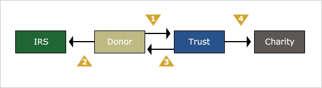

Understanding the Charitable Remainder Trust
To gain a better understanding of how a charitable remainder trust works, study the diagram below.
Click each
to learn more.

1. While the donor can technically fund the trust with any type of property, it is generally advisable to not use leveraged property; nor is it generally advisable to use property that has declined in value from its purchase price, as such assets will be valued at their current market value and the possibility of using the loss to offset income taxes will be lost. Generally speaking, appreciated property should be given first priority. This is because no capital gain taxes are payable when the property is donated. If the trust later sells the asset, again there are no capital gain taxes. Only if the capital gain gets paid out to the income beneficiary would the beneficiary be subject to the tax.
Note that the remainder value must have an actuarial value that is at least 10% of the initial value of the property contributed to the trust. Anything less will prevent the trust from qualifying as a charitable remainder trust.
2. The donor gets an immediate Federal income tax deduction. The tables that are used to calculate the amount that may be deducted will take into account the number of years before termination and distributions to the donor. If the trust is for the lifetime of the income beneficiary(ies), the tables will also take life expectancy into consideration.
3. When the income beneficiary receives the required distributions, the income taxes assessed to that distribution are determined using a tiering methodology. This income is paid out and taxed on a four tier system, in order:
Ordinary income
Capital gain income
Tax-exempt income
Tax-free distributions of principal
Income at the trust level is allocated for accounting purposes to the appropriate tier. The taxation of each distribution is determined by first applying the Tier 1 accounting allocation until exhausted, then tier 2 until exhausted, and so on.
Keep in mind that the trust assumes the donor's cost basis in the property/asset contributed. Thus, if the contributed property is subsequently sold by the trust, the income realized as a result of the sale is allocated to the appropriate tier to be applied against future distributions. Though any gain on the contributed property is avoided by the grantor, it is likely to be in turn taxed to the income beneficiary as distributions are received. Thus, if the grantor is also a beneficiary, the gain may not be ultimately avoided.
4. Upon termination, the charity receives the corpus of the trust. This amount may be more or less than was originally contributed, depending upon investment performance and the degree to which income was allowed to accumulate and principal was not encroached.